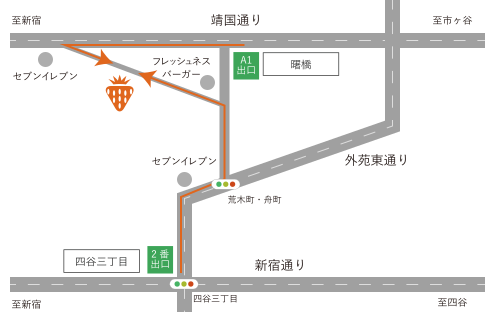

CHALONへの
アクセス

〒132-4567
東京都新宿区愛住町 22 第三山田ビル1F
Google
Mapで見る
- 曙橋駅からお越しの場合
-
- A1出口を出て、靖国通りを右手に見ながら進みます。
- セブンイレブンのある交差点を、左手前方向に曲がります。
- 右手にCHALONが見えます。
- 四谷三丁目駅からお越しの場合
-
- 2番出口を出て、新宿通りとは外苑東通りを新宿通りを後ろにしながら進みます。
- 荒木町・舟町の交差点を左に曲がります。
- フレッシュネスバーガーのある交差点を左に曲がります。
- 左手にCHALONが見えます。